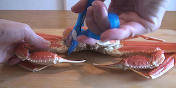
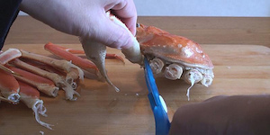
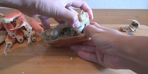
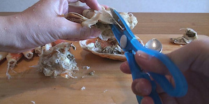
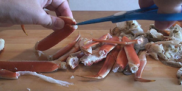
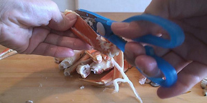
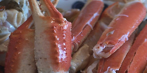

It was a face that was a little spoofing in landscape
Snow crab.
Although it is popular Hassle such as potions were also shelled for the "crab shabu",
The whole is full this time.
Most demolition kana easy in the crab three? I was allowed to leave at the end and I thought, but I actually feel this child had a higher degree of difficulty most will.
First I detach the foot. It's ... cut off, and very?
Shell but not least initially struggled hard unexpectedly,
And once you disconnect only there to put the scissors well to joints, the camera turns off lightly twisting the rest.
Is it pretty fun if you remember tips.
And I remove the "loincloth".
I also remove the shell. This place is crab miso
Since some, carefully quietly so as not to spill.
I Disconnect gills Pirapira the "crab".
Seen in half further so that it cut in half, it becomes vertical to cut the leg further embrace.
Myself, I got disconnected in the indirect foot wrong, but this seems was good without turning off. .
Thick portion of the foot is a break of two on the front side,
Thin part of the break one on the back.
After you have beat "crab" and "crab" alone indeed,
Power is becoming not unobtainable.
And I snow crab, I'm stiff.
I was to defeat the first there is this strength.
It has become a foolish cut, but completed anyway.
But finally in this ...